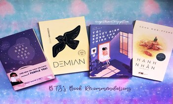
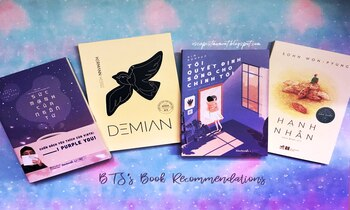

Amy Smith
Số giờ hoạt động
Trạng thái
542 hrs


 


XIN CHÀO, AMY!
Chúc bạn một ngày tốt lành, hôm nay cũng hãy đọc sách nhé!
Chương 1.2: Thư hồi âm để trong hộp nhận sữa
Đọc xong bức thư, ba đứa quay sang nhìn nhau.
"Thế này là thế nào?" Người lên tiếng đầu tiên là Shota. "Tại sao lại nhét cái thư này vào đây?"
"Vì đang đau khổ chứ sao." Kouhei nói. "Thư viết thế còn gì."
"Tao biết. Ý tao là tại sao lại gửi thư nhờ tư vấn đến tiệm tạp hoá. Lại còn một tiệm đã đóng cửa, không có ai sống."
"Mày hỏi tao thì tao cũng không biết đâu."
"Tao không hỏi mày, Kouhei. Chỉ là tao nêu nghi vấn thôi. Rằng thế này là sao."
Bỏ ngoài tai đoạn nói chuyện của hai đứa, Atsuya nhòm vào trong phong bì. Bên trong có một chiếc phong bì được gấp gọn, phần người nhận đề "Thỏ Ngọc cung trăng" bằng bút dạ.
"Việc này nghĩa là sao nhỉ?" Cuối cùng Atsuya cũng lên tiếng. "Có vẻ không phải là một trò đùa được tính toán. Cô ta thực lòng muốn nhờ tư vấn đấy. Lại còn về chuyện khá nan giải nữa."
"Không phải là gửi nhầm à." Shota nói. "Nhầm với tiệm tạp hoá nào đó nhận tư vấn ấy, chắc là thế rồi."
Atsuya cầm đèn pin, đứng dậy. "Tao sẽ đi kiểm tra."
Nói rồi Atsuya ra ngoài bằng cửa sau rồi vòng ra phía trước tiệm. Nó dùng đèn pin rọi vào tấm biển hiệu lấm lem.
Nó căng mắt ra nhìn. Tuy sơn đã bị tróc, rất khó đọc nhưng chữ sau từ "tạp hoá" chắc chắn là "Namiya".
Nó quay vào nhà, nói lại điều đó với Shota và Kouhei.
"Vậy thì đúng là tiệm này à. Bình thường có ai nghĩ nhét thư vào cái tiệm bỏ hoang này sẽ nhận được hồi âm không nhỉ?" Shota nghiêng đầu thắc mắc.
"Hay là nhầm tên Namiya." Người nói là Kouhei. "Ở đâu đó có một tiệm tạp hoá Namiya thật, vì tên giống nhau nên bị nhầm."
"Không, không thể có chuyện đó. Dòng chữ trên biển hiệu rất mờ, nếu không nghĩ đấy là Namiya thì không nhìn ra đâu. Với lại..." Atsuya lấy tờ tuần san ban nãy ra. "Tao có cảm giác đã nhìn thấy ở đâu đó rồi."
"Nhìn thấy?" Shota hỏi.
"Nhìn thấy chữ Namiya. Hìn như trong tờ tuần san này thì phải."
"Hả?"
Atsuya mở phần mục lục của tờ tuần san. Nó liếc qua thật nhanh rồi lập tức dừng lại một chỗ.
Bài báo đó có tên là "Cực kỳ nổi tiếng! Tiệm tạp hoá gỡ rối tơ lòng".
"Đây này. Không phải là Namiya mà là Nayami (1)..."
----------
(1) Trong tiếng Nhật, từ "nayami" (phát âm hơi giống với tên Namiya của tiệm tạp hoá) có nghĩa là "điều phiền muộn".
Nó mở trang đó ra. Nội dung bài báo như sau:
"Một tiệm tạp hoá giúp giải đáp mọi thắc mắc đang rất được khen ngợi. Đó là tiệm tạp hoá Namiya nằm ở thành phố XX. Nếu nhét thư nhờ giải đáp thắc mắc qua khe nhận thư ở cửa cuốn vào đêm hôm trước, ngày hôm sau bạn sẽ nhận được thư hồi âm trong hộp nhận sữa phía sau tiệm. Chủ tiệm tạp hoá, ông Namiya Yuji (72 tuổi) vừa cười vừa chia sẻ:
'Cơ duyên có lẽ bắt đầu từ lần nói đùa với bọn trẻ con hàng xóm. Chúng cố tình đọc chệch tên tiệm Namiya thành Nayami, Nayami. Biển hiệu của tiệm ghi là 'Nhận đặt hàng. Xin cứ hỏi', thế là bọn trẻ hỏi tôi là ông ơi, vậy bọn cháu hỏi ông những khúc mắc của bọn cháu được không. Tôi bảo được chứ, các cháu cứ hỏi ông bất cứ khúc mắc gì và bọn nó hỏi thật. Xuất phát từ một lời nói đùa nên ban đầu toàn là những lời nhờ tư vấn tào lao thôi. Kiểu như cháu ghét học lắm nhưng lại muốn sổ liên lạc toàn là điểm 100 thì phải làm sao. Nhưng khi tôi khăng khăng giữ nguyên chính kiến, trả lời đầy đủ thì những lời xin tư vấn nghiêm túc tăng lên. Chẳng hạn như cháu khổ quá vì bố mẹ suốt ngày cãi nhau. Kể từ đó, tôi yêu cầu các câu hỏi phải được viết thành thư và cho vào khe nhận thư ở cửa cuốn. Thư hồi âm sẽ để trong hộp nhận sữa ở cửa sau. Làm vậy, tôi có thể hồi âm được cả thư nhờ tư vấn mà không xưng danh. Rồi bắt đầu có cả các thư tư vấn của người lớn. Tôi biết, có hỏi ông già tầm thường này cũng hoài công thôi nhưng vẫn cố gắng suy nghĩ và hồi âm lại.'
Được biết những câu hỏi nhờ tư vấn về tình yêu chiếm đa số.
'Khoản đó là tôi kém nhất đấy.' ông Namiya nói. Có vẻ như đó cũng là điều phiền muộn của chính bản thân ông."
Bài báo có kèm một bức ảnh nhỏ. Bức ảnh đó, không có gì nhầm lẫn, chính là ảnh tiệm tạp hoá này. Một ông lão nhỏ thó đang đứng trước tiệm.
"Không phải vô tình mà tờ tuần san này ở đây. Lời đồn về tiệm tạp hoá Namiya. Kiểu như mới nghe được gần đây vậy. Nghĩa là giờ vẫn còn lời đồn đó à?"
Atsuya khoanh tay. "Cũng có thể. Dù tao thấy không hợp lý."
"Hay là nghe được từ người già đãng trí nào." Kouhei nói. "Người đó không biết là tiệm tạp hoá Namiya đã ra nông nỗi này nên đã kể cho cô Thỏ Ngọc."
"Không, giả sử là như thế đi nữa thì ngay khi nhìn thấy căn nhà này cũng phải thấy lạ rồi chứ. Rõ ràng là làm gì có ai sống ở đây."
"Vậy thì đầu óc cô Thỏ Ngọc đó có vấn đề rồi. Đau khổ quá dẫn đến quẫn trí."
Atsuya lắc đầu. "Tao nghĩ đây không phải thư do người đầu óc có vấn đề viết đâu."
"Nếu vậy thì là sao?"
"Thì tao đang nghĩ đây."
"Có lẽ nào." Shota lên giọng. "Giờ vẫn còn?"
Atsuya nhìn Shota. "Còn cái gì?"
"Thì chuyện gỡ rối tơ lòng đó. Ở đây này."
"Ở đây? Ý mày là?"
"Nghĩa là bây giờ tuy không ai sống ở đây nhưng vẫn tiếp tục nhận gỡ rối. Ông già đó sống ở một nơi khác, thỉnh thoảng mới đến để lấy thư. Ông sẽ cho thư hồi âm vào hộp nhận sữa ở cửa sau. Giải thích vậy nghe hợp lý hơn."
"Đúng là hợp lý thật, nhưng trong trường hợp đó thì ông già vẫn còn sống. Tức là đã trên một trăm tuổi."
"Hoặc có ai đó làm thay."
"Nhưng làm gì có dấu vết người ra vào đâu."
"Không cần vào nhà. Chỉ cần mở cửa cuốn là lấy được thư rồi."
Shota nói có phần đúng. Cần phải kiểm chứng lại nên ba đứa đi ra phía tiệm. Nhưng khi kiểm tra, ba đứa thấy cửa cuốn được hàn lại từ bên trong, không thể mở được.
"Chết tiệt." Shota bật ra câu chửi thề. "Thế này nghĩa là sao."
Ba đứa quay lại phòng kiểu Nhật. Atsuya đọc bức thư của "Thỏ Ngọc cung trăng" thêm lần nữa.
"Này, làm gì bây giờ?" Shota hỏi Atsuya.
"Chà, việc gì phải bận tâm chứ. Đằng nào đến sáng bọn mình chả ra khỏi đây." Atsuya cho lại bức thư vào phong bì rồi đặt lên chiếu.
Lại một khoảng im lặng. Có tiếng gió thổi. Ánh nến khẽ lay động.
"Không biết người này định tính sao." Kouhei thì thào.
"Cái gì cơ?" Atsuya hỏi.
"Thì đó." Kouhei nói tiếp. "Thế Vận Hội đó. Chắc là sẽ từ bỏ nhỉ."
"Chà." Atsuya lắc đầu.
"Sao mà bỏ được." Người nói là Shota. "Bởi anh người yêu mong cô ấy sẽ tham dự Thế Vận Hội."
"Nhưng mà người mình yêu đang lâm bệnh sắp chết. Tình cảnh như thế thì làm sao mà luyện tập được. Nên ở cạnh người yêu thì hơn. Chắc anh người yêu cũng thực sự muốn vậy đấy." Kouhei phản bác với giọng mạnh mẽ hiếm thấy.
"Tao nghĩ là không đâu. Anh người yêu chống chọi với bệnh tật vì muốn được thấy hình ảnh rạng rỡ của cô ấy. Tao nghĩ anh ta đang cố gắng để ít nhất có thể kéo dài sự sống tới ngày đó. Nếu cô ấy mà từ bỏ Thế Vận Hội, anh ta sẽ không còn động lực để sống nữa."
"Nhưng mà, trong thư cũng viết rồi đấy, tao nghĩ cô ấy có làm gì cũng không tập trung được đâu. Tình hình như thế cũng không thể tham dự Thế Vận Hội. Không được gặp người yêu, nguyện ước cuối cùng không thành, chẳng phải sẽ mất cả chì lẫn chài sao."
"Vậy nên cô ấy buộc phải cố gắng hết sức thôi. Giờ không phải lúc suy nghĩ này nọ. Phải luyện tập hết mình, vì cả người yêu nữa, dù gì cũng phải giành được suất tham dự Thế Vận Hội, chỉ còn cách đó thôi."
"Hả?" Kouhei nhăn mặt. "Là tao thì tao chịu thôi."
"Tao có bảo mày làm đâu. Tao đang nói cái cô Thỏ Ngọc này cơ mà."
"Không, tao không thể bảo người khác làm điều mà tao không thể làm. Nếu là mày thì sao hả Shota? Mày làm được không?"
Bị Kouhei hỏi, Shota lúng túng. Nó xị mặt, quay sang Atsuya hỏi: "Thế Atsuya thì sao?"
Atsuya lần lượt nhìn mặt hai đứa.
"Chúng mày đang nói cái gì mà nghiêm trọng thế? Bọn mình việc gì phải nghĩ đến chuyện đó."
"Vậy lá thư này mày định sao?" Kouhei hỏi.
"Sao à... chả sao cả."
"Nhưng phải hồi âm gì đó chứ. Không thể để mặc vậy được."
"Hả?" Atsuya nhìn lại bộ mặt tròn xoe của Kouhei. "Mày muốn viết thư hồi âm hả?"
Kouhei gật đầu.
Số giờ hoạt động
Trạng thái